Zebu 18
Logo and marketing shots from Zebu, the 2019 suite (messaging, Lockbox storage, calendar) that became Tauria. Found on Zebu's old Product Hunt and Pitchwall listings, since zebu.io is gone.
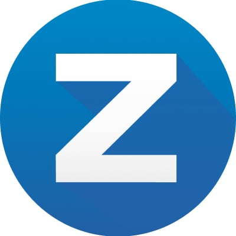
assets/img/work/zebu/zebu-logo.jpg400×400 · 11 KBUse: Work page, Zebu product pageFrom: pitchwall.co/product/zebuZebu's own marketing image (Jesse's company), as posted on the listingassets/img/work/zebu/zebu-icon-small.png121×122 · 5 KBUse: Work page (favicon-sized uses)From: producthunt.com/products/zebuZebu's own marketing image (Jesse's company), as posted on the listing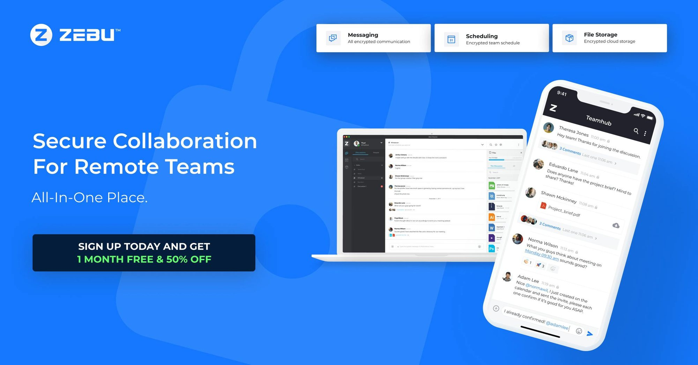
assets/img/work/zebu/zebu-remote-teams.jpg2000×1047 · 152 KBUse: Zebu product pageFrom: producthunt.com/products/zebuZebu's own marketing image (Jesse's company), as posted on the listing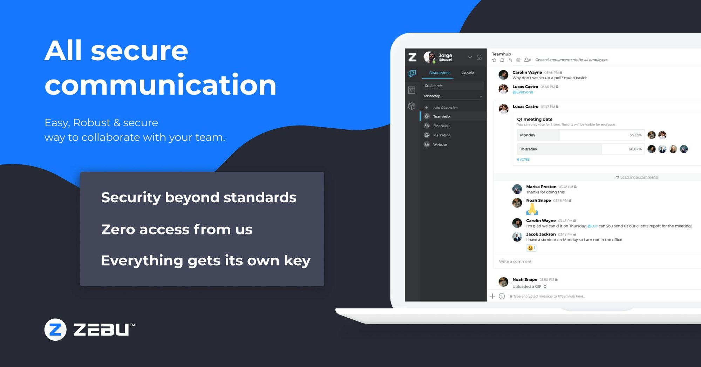
assets/img/work/zebu/zebu-messaging.jpg2000×1047 · 132 KBUse: Zebu product pageFrom: producthunt.com/products/zebuZebu's own marketing image (Jesse's company), as posted on the listing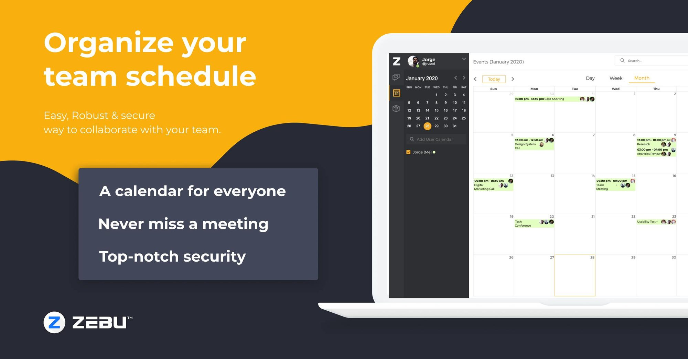
assets/img/work/zebu/zebu-storage.jpg2000×1047 · 125 KBUse: Zebu product pageFrom: producthunt.com/products/zebuZebu's own marketing image (Jesse's company), as posted on the listing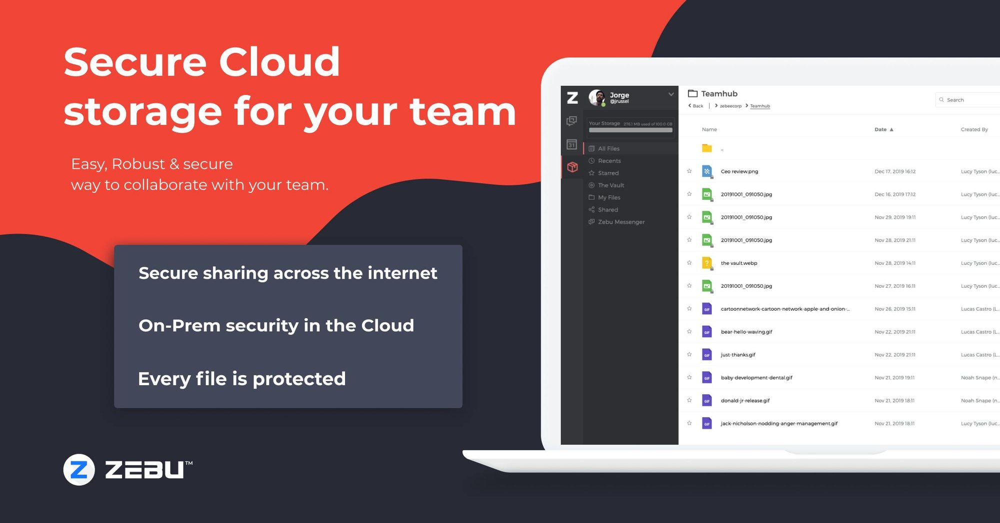
assets/img/work/zebu/zebu-calendar.jpg2000×1047 · 134 KBUse: Zebu product pageFrom: producthunt.com/products/zebuZebu's own marketing image (Jesse's company), as posted on the listing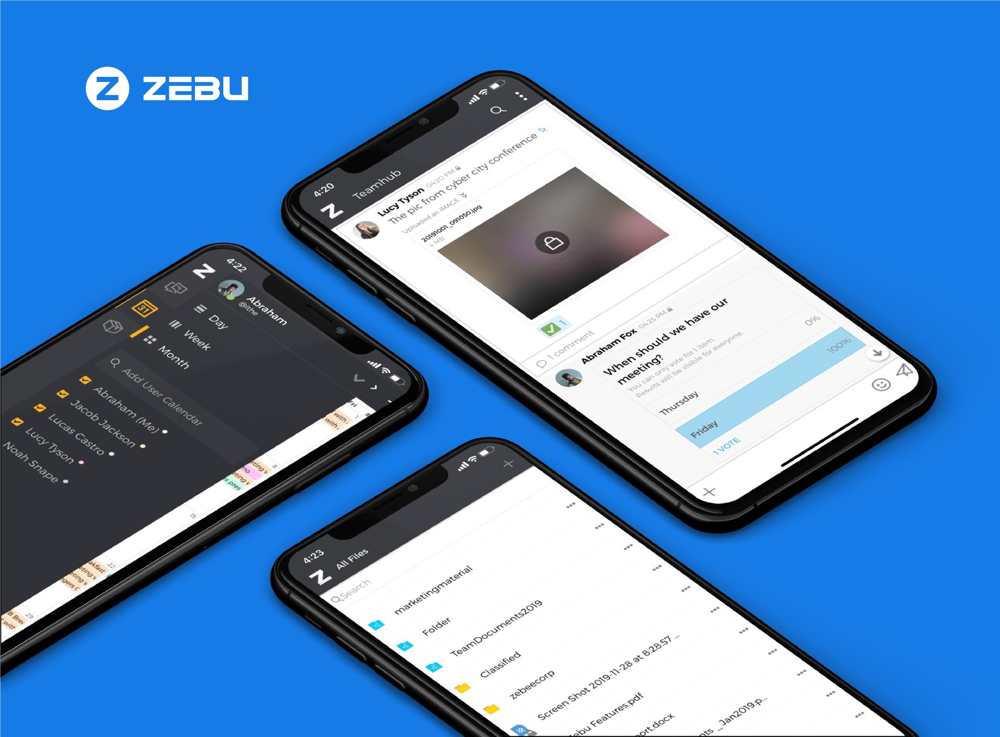
assets/img/work/zebu/zebu-phones.jpg1560×1150 · 168 KBUse: Zebu product pageFrom: producthunt.com/products/zebuZebu's own marketing image (Jesse's company), as posted on the listing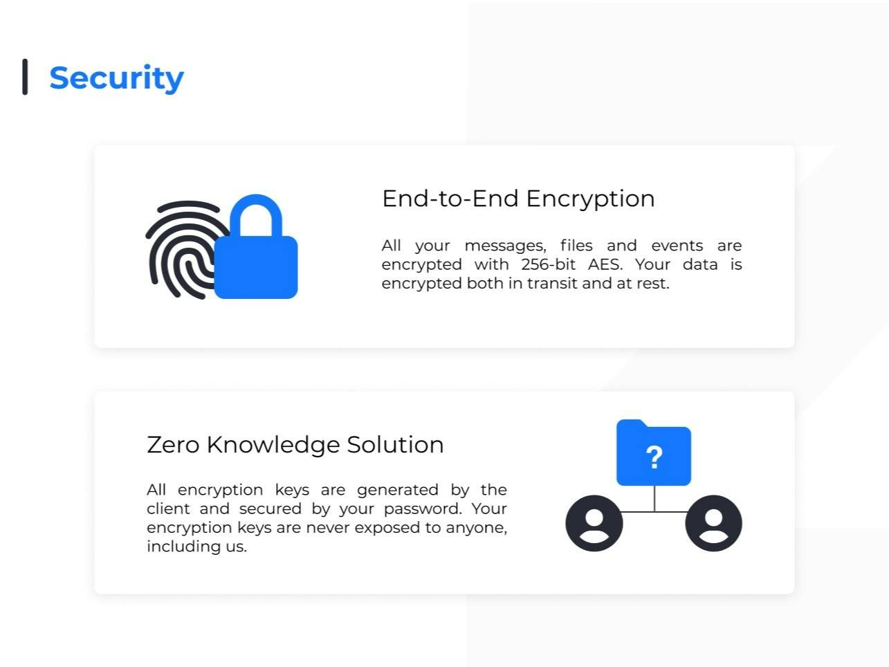
assets/img/work/zebu/zebu-security.jpg1285×964 · 60 KBUse: Zebu product pageFrom: producthunt.com/products/zebuZebu's own marketing image (Jesse's company), as posted on the listing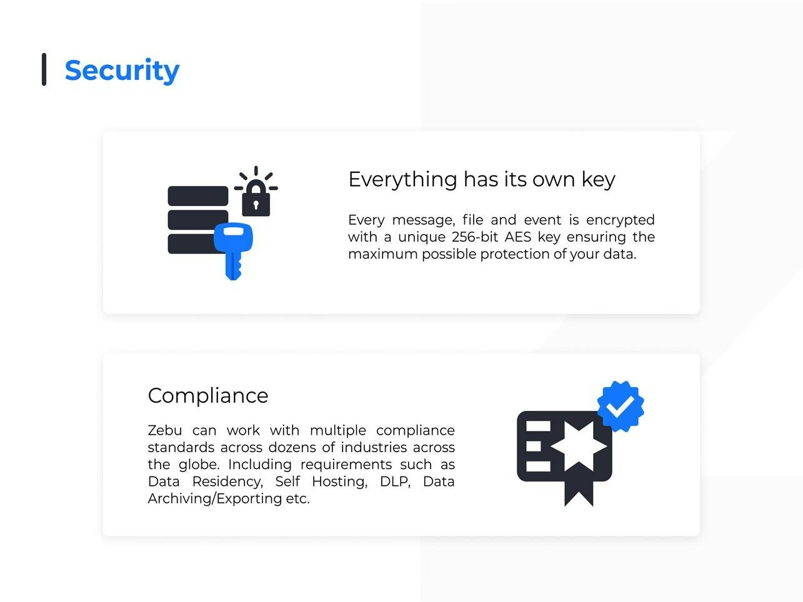
assets/img/work/zebu/zebu-security-compliance.jpg1285×964 · 65 KBUse: Zebu product pageFrom: producthunt.com/products/zebuZebu's own marketing image (Jesse's company), as posted on the listing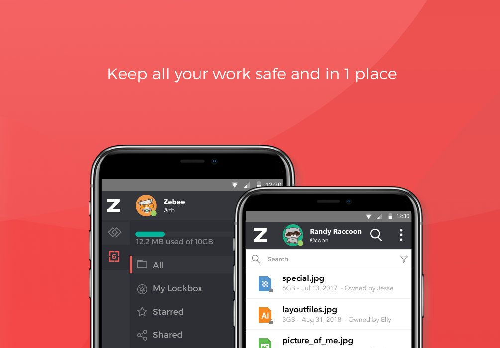
assets/img/work/zebu/zebu-lockbox-mobile.jpg1005×701 · 46 KBUse: Zebu product pageFrom: pitchwall.co/product/zebuZebu's own marketing image (Jesse's company), as posted on the listing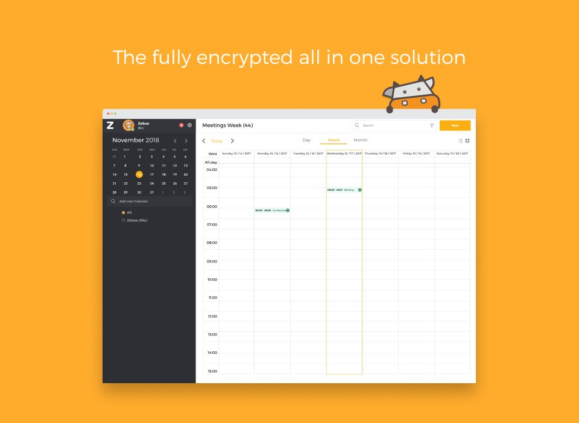
assets/img/work/zebu/zebu-calendar-zebee.jpg960×701 · 43 KBUse: Zebu product pageFrom: pitchwall.co/product/zebuZebu's own marketing image (Jesse's company), as posted on the listing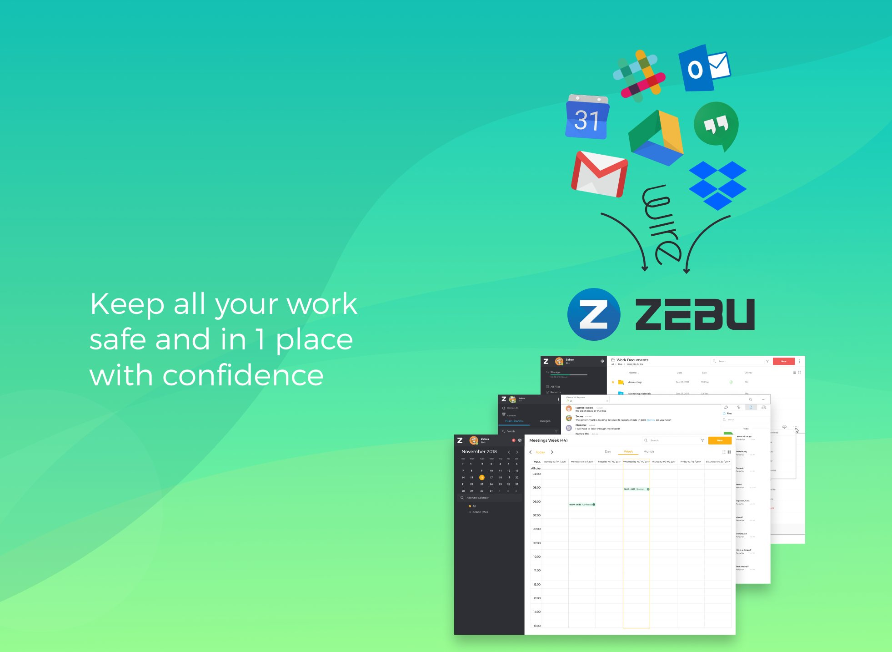
assets/img/work/zebu/zebu-all-in-one.jpg1962×1433 · 129 KBUse: Zebu product pageFrom: pitchwall.co/product/zebuZebu's own marketing image (Jesse's company), as posted on the listing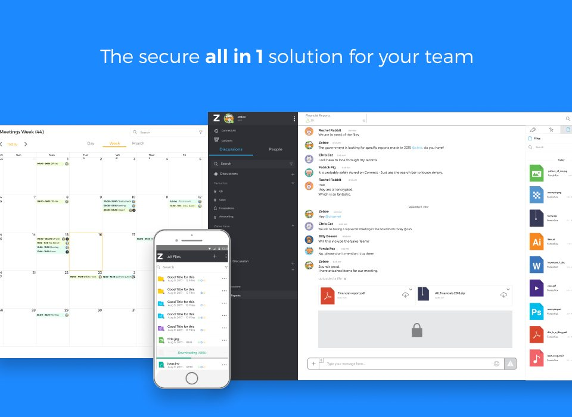
assets/img/work/zebu/zebu-desktop-suite.jpg960×701 · 61 KBUse: Zebu product pageFrom: pitchwall.co/product/zebuZebu's own marketing image (Jesse's company), as posted on the listing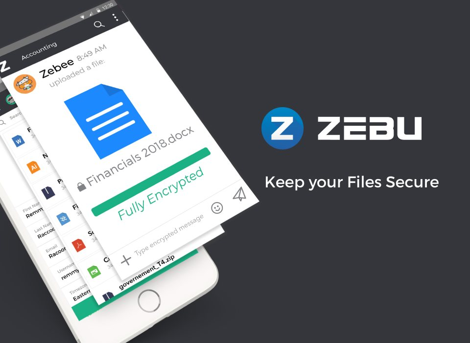
assets/img/work/zebu/zebu-files-secure.jpg960×701 · 56 KBUse: Zebu product pageFrom: pitchwall.co/product/zebuZebu's own marketing image (Jesse's company), as posted on the listing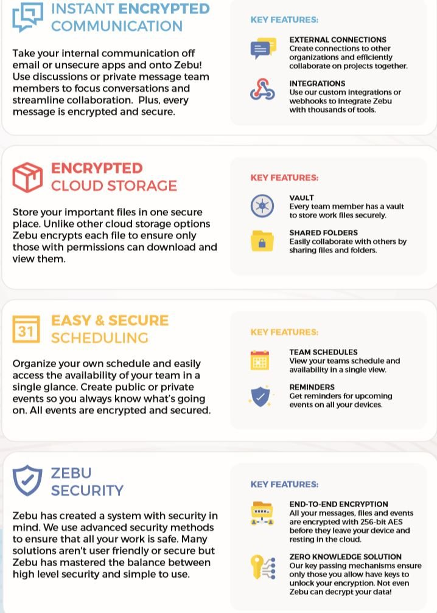
assets/img/work/zebu/zebu-features-sheet.jpg718×1008 · 120 KBUse: Zebu product pageFrom: pitchwall.co/product/zebuZebu's own marketing image (Jesse's company), as posted on the listing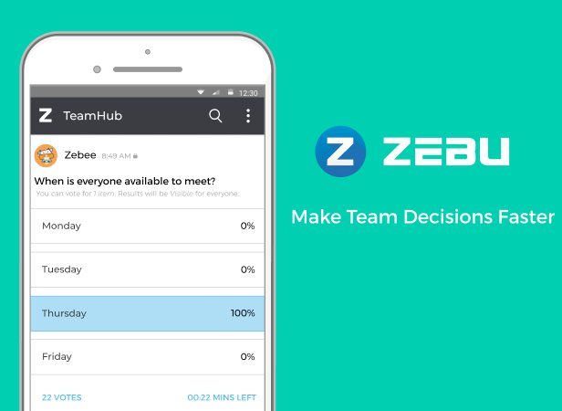
assets/img/work/zebu/zebu-teamhub-poll.jpg616×450 · 24 KBUse: Zebu product pageFrom: pitchwall.co/product/zebuZebu's own marketing image (Jesse's company), as posted on the listing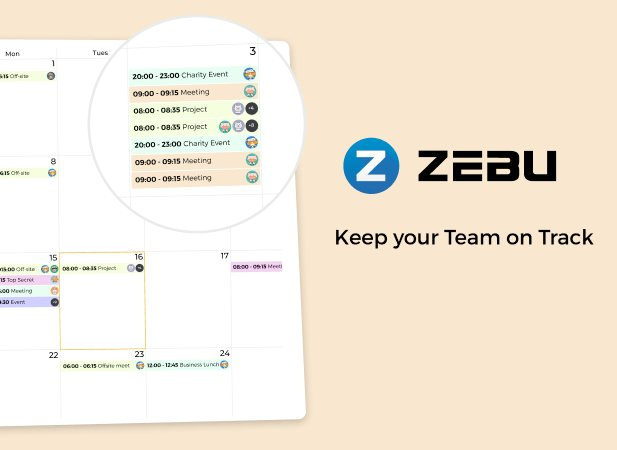
assets/img/work/zebu/zebu-team-schedule.jpg617×450 · 24 KBUse: Zebu product pageFrom: pitchwall.co/product/zebuZebu's own marketing image (Jesse's company), as posted on the listingassets/img/work/zebu/zebee-peeking-crop.png95×67 · 4 KBUse: Placeholder until Jesse sends the real Zebee artFrom: pitchwall.co/product/zebuZebu's own marketing image (Jesse's company), as posted on the listingTauria 15
Logos and product shots for Connect, Lockbox, Cal and Calls. Found on Tauria's Product Hunt gallery, BetaList, Capterra, the 2020 press release, the YouTube channel and closed.tauria.com.
assets/img/work/tauria/tauria-wordmark-dark.svgSVG · 3 KBUse: Work page, Tauria product pagesFrom: closed.tauria.com/Tauria's own logo (Jesse's company). Tauria's IP was acquired, so the new owner may hold the mark nowassets/img/work/tauria/tauria-wordmark-light.svgSVG · 3 KBUse: Work page, Tauria product pagesFrom: Made from tauria-wordmark-dark.svg by changing the text colour to whiteAs above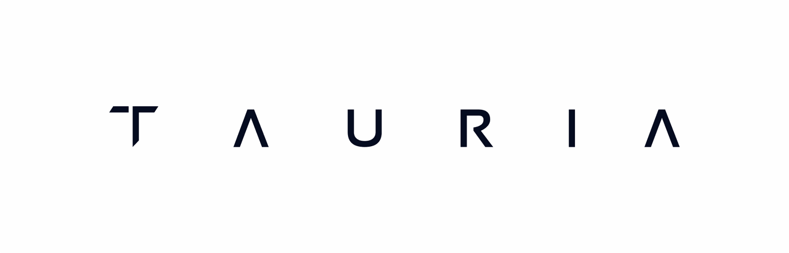
assets/img/work/tauria/tauria-wordmark.png1555×500 · 5 KBUse: Work pageFrom: supportontariomade.ca/explore-products/tauriaTauria's own marketing image (Jesse's company), as posted on the listingassets/img/work/tauria/tauria-icon.jpg900×900 · 40 KBUse: Work page, Tauria product pagesFrom: youtube.com/@tauriahqTauria's own marketing image (Jesse's company), as posted on the listingassets/img/work/tauria/tauria-logo-animated.gif1080×1080 · 467 KBUse: Work page or a boot momentFrom: producthunt.com/products/tauriaTauria's own marketing image (Jesse's company), as posted on the listingassets/img/work/tauria/tauria-lockbox.jpg2400×1799 · 168 KBUse: Tauria Lockbox pageFrom: producthunt.com/products/tauriaTauria's own marketing image (Jesse's company), as posted on the listingassets/img/work/tauria/tauria-connect.jpg2400×1799 · 191 KBUse: Tauria Connect pageFrom: producthunt.com/products/tauriaTauria's own marketing image (Jesse's company), as posted on the listingassets/img/work/tauria/tauria-cal.jpg2400×1799 · 158 KBUse: Tauria Cal pageFrom: producthunt.com/products/tauriaTauria's own marketing image (Jesse's company), as posted on the listingassets/img/work/tauria/tauria-calls.jpg2400×1799 · 225 KBUse: Tauria Calls pageFrom: producthunt.com/products/tauriaTauria's own marketing image (Jesse's company), as posted on the listingassets/img/work/tauria/tauria-calls-desktop-small.jpg480×360 · 15 KBUse: Tauria Calls pageFrom: producthunt.com/products/tauriaTauria's own marketing image (Jesse's company), as posted on the listingassets/img/work/tauria/tauria-calls-and-connect.jpg2000×1200 · 134 KBUse: Work page, Tauria Calls pageFrom: betalist.com/startups/tauriaTauria's own marketing image (Jesse's company), as posted on the listing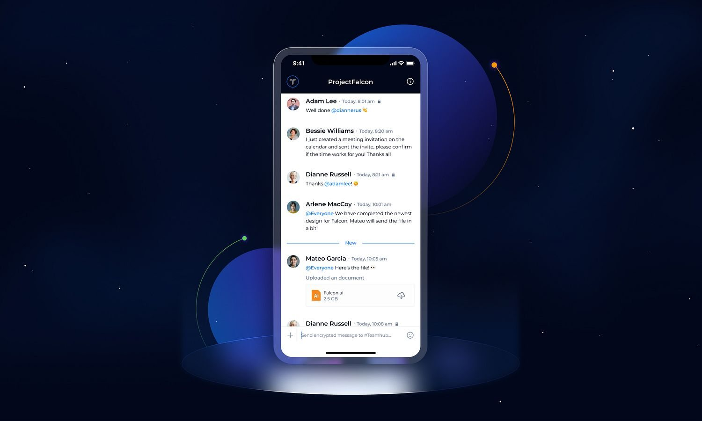
assets/img/work/tauria/tauria-connect-mobile.jpg1500×900 · 62 KBUse: Tauria Connect pageFrom: betalist.com/startups/tauriaTauria's own marketing image (Jesse's company), as posted on the listingassets/img/work/tauria/tauria-calls-grid.jpg2400×1350 · 395 KBUse: Tauria Calls pageFrom: capterra.ie/software/195833/tauriaTauria's own marketing image (Jesse's company), as posted on the listingassets/img/work/tauria/tauria-press-move-over-zoom.jpg1024×768 · 56 KBUse: Tauria Calls page, pressFrom: prnewswire.com/news-releases/move-over-zoom-thisTauria's own marketing image (Jesse's company), as posted on the listing (press release image)assets/img/work/tauria/tauria-welcome-video-still.jpg1280×720 · 75 KBUse: Tauria Calls pageFrom: youtube.com/watch?v=m659VN7_x64Tauria's own marketing image (Jesse's company), as posted on the listing (video thumbnail)Hobbies: the shelf 26
One cover per item on the shelf, named by the item's data-id in hobbies/index.html. Files ending in -alt-… are other editions to choose from.
assets/img/hobbies/covers/jobs.jpg328×500 · 23 KBUse: Hobbies shelf: jobsFrom: Publisher cover image via Amazon (by ISBN-10), ISBN 1451648537Cover art © its publisher or studio; used small, to show which work it isassets/img/hobbies/covers/meditations.jpg326×500 · 27 KBUse: Hobbies shelf: meditationsFrom: Publisher cover image via Amazon (by ISBN-10), ISBN 0140449337Cover art © its publisher or studio; used small, to show which work it isassets/img/hobbies/covers/meditations-alt-modern-library.jpg320×500 · 22 KBUse: Hobbies shelf: meditations (other option)From: Open Library (openlibrary.org), cover by ISBN 9780812968255Cover art © its publisher or studio; used small, to show which work it isassets/img/hobbies/covers/threebody.jpg332×499 · 55 KBUse: Hobbies shelf: threebodyFrom: Open Library (openlibrary.org), cover by ISBN 9780765377067Cover art © its publisher or studio; used small, to show which work it is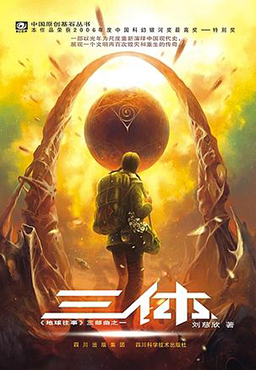
assets/img/hobbies/covers/threebody-alt-chinese.jpg256×370 · 116 KBUse: Hobbies shelf: threebody (other option)From: en.wikipedia.org/wiki/File:Threebody.jpgCover art © its publisher or studio; used small, to show which work it is (Wikipedia non-free file)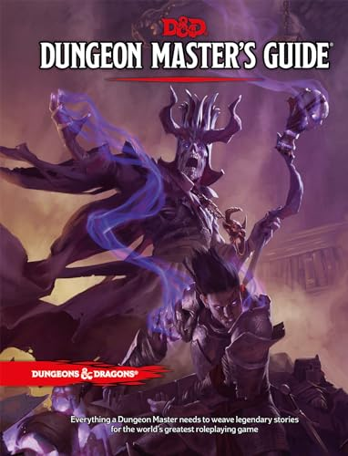
assets/img/hobbies/covers/dmg.jpg382×500 · 32 KBUse: Hobbies shelf: dmgFrom: Publisher cover image via Amazon (by ISBN-10), ISBN 0786965622Cover art © its publisher or studio; used small, to show which work it isassets/img/hobbies/covers/will-of-the-many.jpg325×500 · 48 KBUse: Hobbies: status card and the Now spine ("Reading")From: Open Library (openlibrary.org), cover by ISBN 9781982141172Cover art © its publisher or studio; used small, to show which work it isassets/img/hobbies/covers/sg1.jpg667×1000 · 169 KBUse: Hobbies shelf: sg1From: The Movie Database (themoviedb.org)/tv/4629Cover art © its publisher or studio; used small, to show which work it is. Poster found via TMDB (not endorsed by TMDB)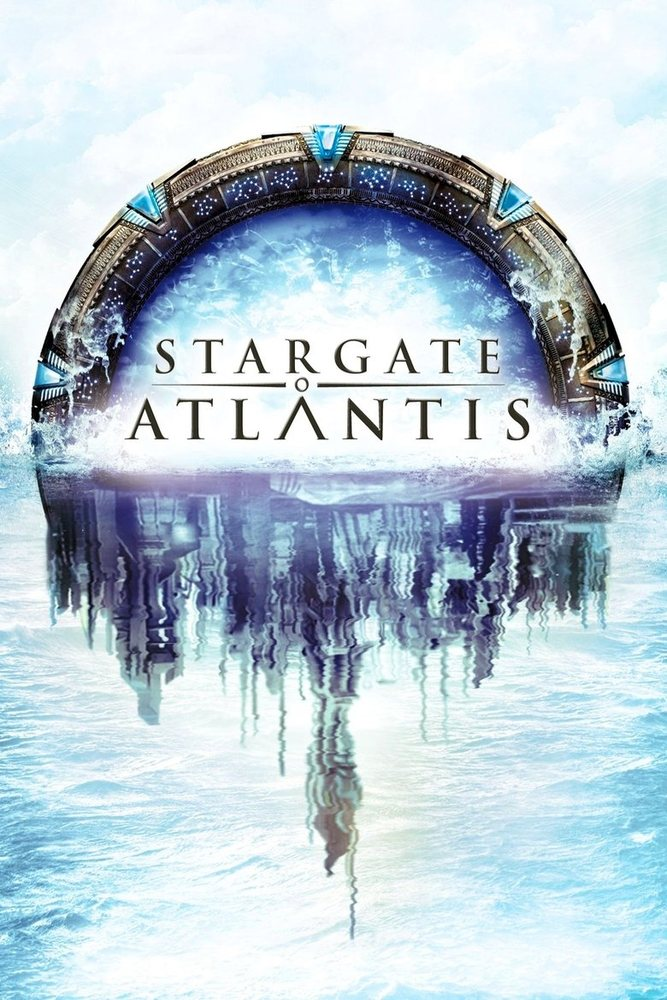
assets/img/hobbies/covers/atlantis.jpg667×1000 · 139 KBUse: Hobbies shelf: atlantisFrom: The Movie Database (themoviedb.org)/tv/2290Cover art © its publisher or studio; used small, to show which work it is. Poster found via TMDB (not endorsed by TMDB)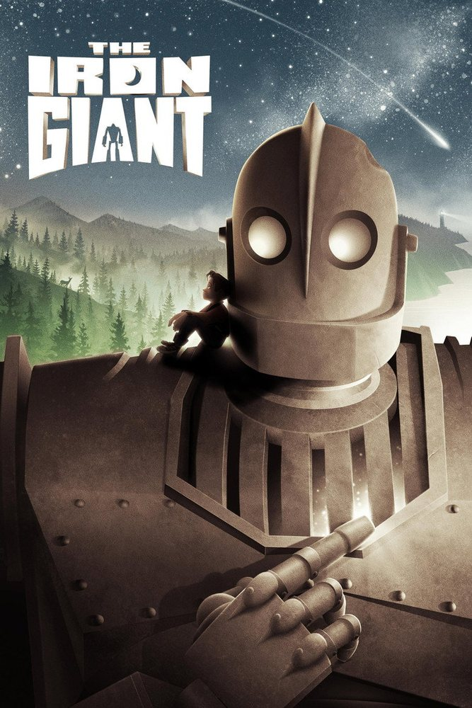
assets/img/hobbies/covers/irongiant.jpg667×1000 · 138 KBUse: Hobbies shelf: irongiantFrom: The Movie Database (themoviedb.org)/movie/10386Cover art © its publisher or studio; used small, to show which work it is. Poster found via TMDB (not endorsed by TMDB)assets/img/hobbies/covers/shrek.jpg667×1000 · 154 KBUse: Hobbies shelf: shrekFrom: The Movie Database (themoviedb.org)/movie/808Cover art © its publisher or studio; used small, to show which work it is. Poster found via TMDB (not endorsed by TMDB)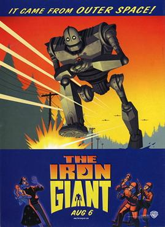
assets/img/hobbies/covers/irongiant-alt-1999.jpg269×370 · 22 KBUse: Hobbies shelf: irongiant (other option)From: en.wikipedia.org/wiki/File:The_Iron_Giant_posterCover art © its publisher or studio; used small, to show which work it is (Wikipedia non-free file)
assets/img/hobbies/covers/shrek-alt-2001.jpg260×389 · 47 KBUse: Hobbies shelf: shrek (other option)From: en.wikipedia.org/wiki/File:Shrek_(2001_animated_Cover art © its publisher or studio; used small, to show which work it is (Wikipedia non-free file)assets/img/hobbies/covers/halo3.jpg256×325 · 70 KBUse: Hobbies shelf: halo3From: en.wikipedia.org/wiki/File:Halo_3_final_boxshot.Cover art © its publisher or studio; used small, to show which work it is (Wikipedia non-free file; the only copy we could reach, 256 px)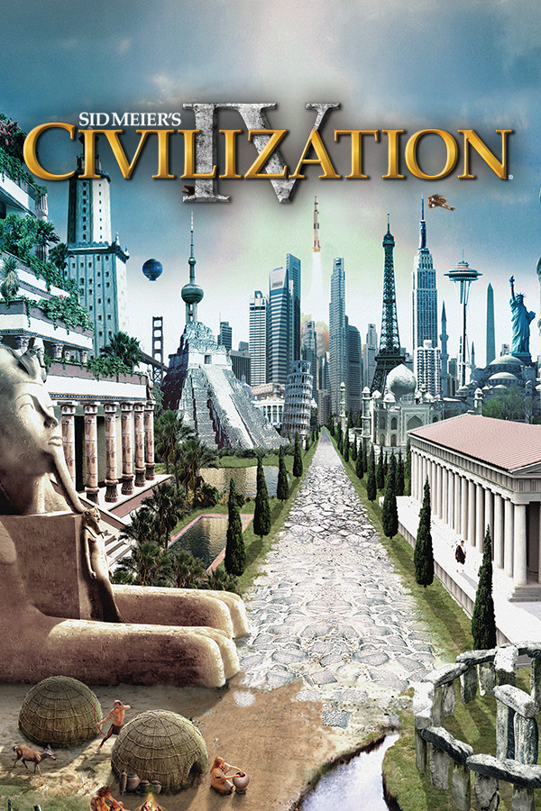
assets/img/hobbies/covers/civ4.jpg600×900 · 274 KBUse: Hobbies shelf: civ4From: store.steampowered.com/app/3900/Cover art © its publisher or studio; used small, to show which work it is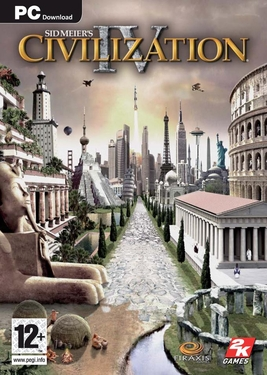
assets/img/hobbies/covers/civ4-alt-box.jpg267×375 · 97 KBUse: Hobbies shelf: civ4 (other option)From: en.wikipedia.org/wiki/File:CivIVboxshot.jpgCover art © its publisher or studio; used small, to show which work it is (Wikipedia non-free file)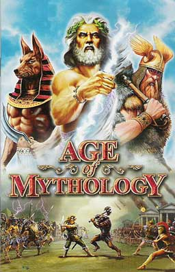
assets/img/hobbies/covers/aom.jpg256×398 · 51 KBUse: Hobbies shelf: aomFrom: en.wikipedia.org/wiki/File:Age_of_Mythology_LineCover art © its publisher or studio; used small, to show which work it is (Wikipedia non-free file)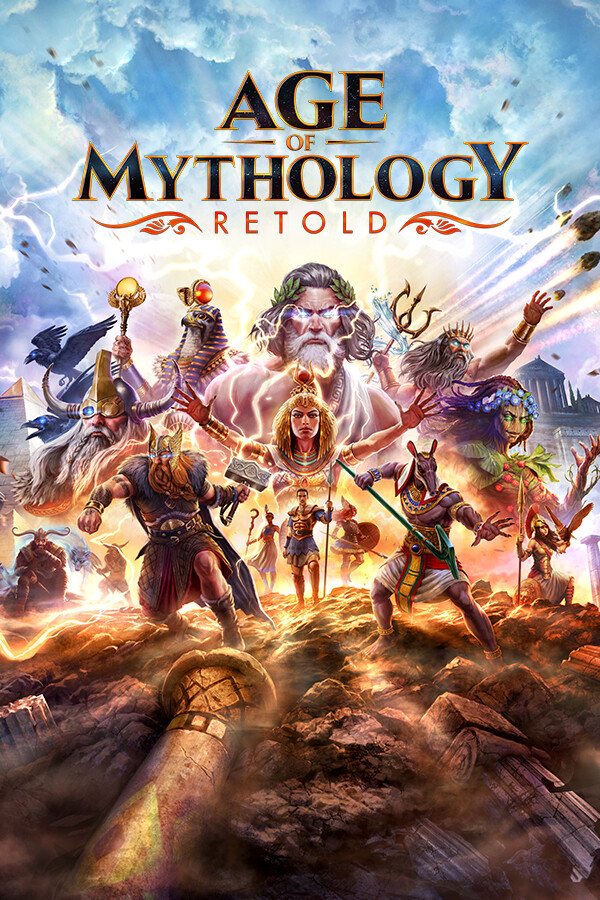
assets/img/hobbies/covers/aom-alt-retold.jpg600×900 · 295 KBUse: Hobbies shelf: aom (other option)From: store.steampowered.com/app/1934680/Cover art © its publisher or studio; used small, to show which work it is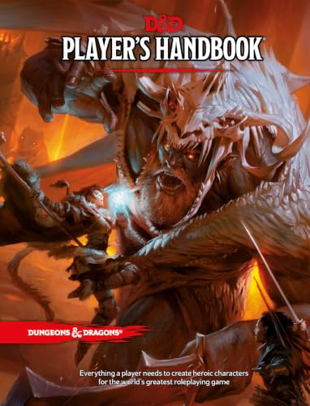
assets/img/hobbies/covers/dnd.jpg382×500 · 35 KBUse: Hobbies shelf: dndFrom: Publisher cover image via Amazon (by ISBN-10), ISBN 0786965606Cover art © its publisher or studio; used small, to show which work it isassets/img/hobbies/covers/dnd-logo.svgSVG · 580 KBUse: Hobbies: D&D tableFrom: en.wikipedia.org/wiki/File:Dungeons_&_Dragons_5tTrademark of its owner; used to show the affiliation (Wikipedia non-free file)assets/img/hobbies/covers/marathon.jpg600×900 · 106 KBUse: Hobbies: status card and the Now spine ("Playing")From: store.steampowered.com/app/3065800/Cover art © its publisher or studio; used small, to show which work it isassets/img/hobbies/covers/marathon-hero.jpg1920×620 · 183 KBUse: Hobbies: a "now playing" bannerFrom: store.steampowered.com/app/3065800/Cover art © its publisher or studio; used small, to show which work it isassets/img/hobbies/covers/marathon-logo.png640×360 · 11 KBUse: Hobbies: a "now playing" bannerFrom: store.steampowered.com/app/3065800/Trademark of its owner; used to show the affiliationassets/img/hobbies/covers/sg1-logo.svgSVG · 16 KBUse: Hobbies shelf: sg1From: commons.wikimedia.org/wiki/File:Stargate_SG-1_19Public domain as a simple text logo (PD-textlogo); still a trademarkassets/img/hobbies/covers/atlantis-logo.svgSVG · 28 KBUse: Hobbies shelf: atlantisFrom: commons.wikimedia.org/wiki/File:Stargate_AtlantiPublic domain as a simple text logo (PD-textlogo); still a trademarkassets/img/hobbies/covers/meditations-alt-1558.jpg579×960 · 95 KBUse: Hobbies shelf: meditations (other option)From: commons.wikimedia.org/wiki/File:Marcus_Aurelius.Public domain (printed 1558)Hobbies: the console cabinet 17
A photo of each console in the cabinet (mostly Evan Amos's public-domain photos), and each console's logo.
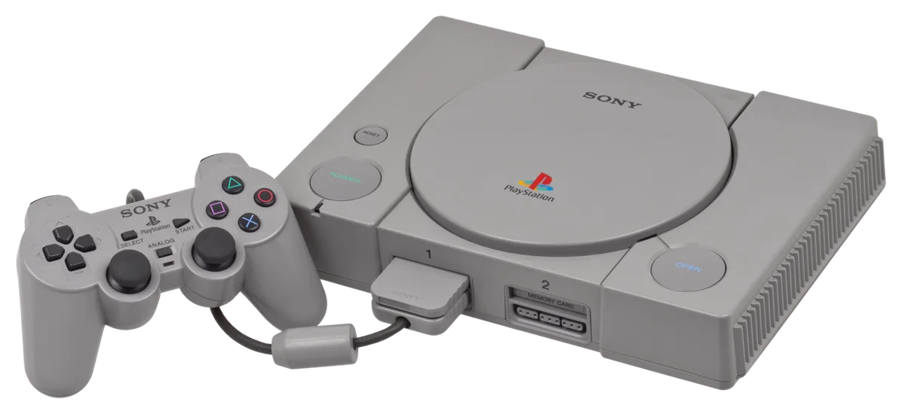
assets/img/hobbies/consoles/playstation.webp1200×550 · 44 KBUse: Hobbies: console cabinet (playstation)From: commons.wikimedia.org/wiki/File:PSX-Console-wConPublic domain. Photo: Evan Amos, Wikimedia Commons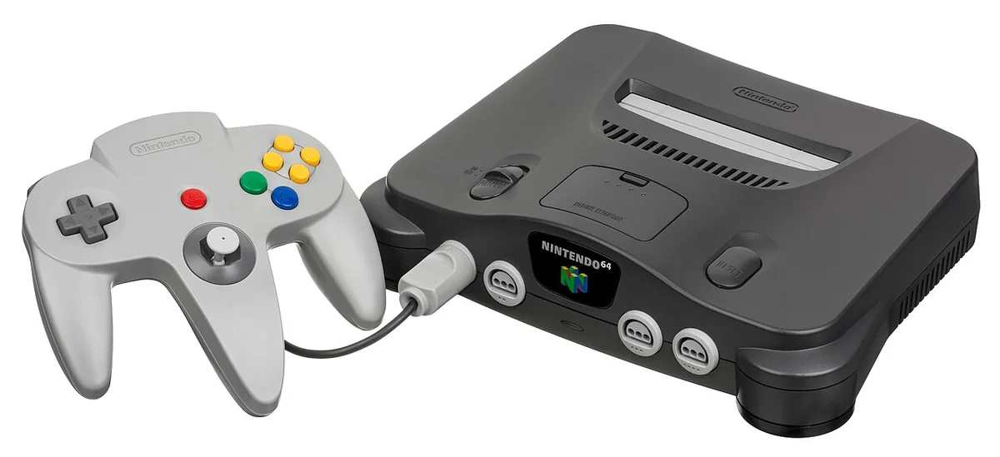
assets/img/hobbies/consoles/nintendo-64.webp1200×549 · 32 KBUse: Hobbies: console cabinet (nintendo-64)From: commons.wikimedia.org/wiki/File:Nintendo-64-wConPublic domain. Photo: Evan Amos, Wikimedia Commons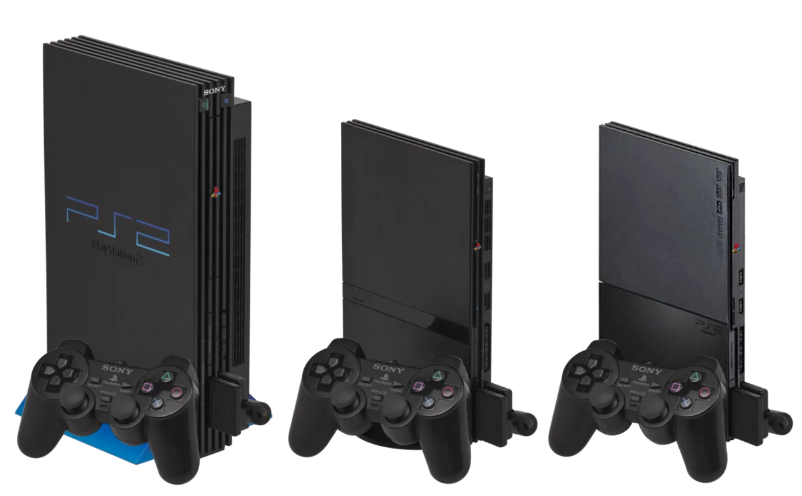
assets/img/hobbies/consoles/playstation-2.webp1200×743 · 57 KBUse: Hobbies: console cabinet (playstation-2)From: commons.wikimedia.org/wiki/File:Sony_PlayStationPublic domain (CC0). Photo: Perchybits, Wikimedia Commonsassets/img/hobbies/consoles/xbox.webp1200×519 · 48 KBUse: Hobbies: console cabinet (xbox)From: commons.wikimedia.org/wiki/File:Xbox-Console-wDuPublic domain. Photo: Evan Amos, Wikimedia Commonsassets/img/hobbies/consoles/gamecube.webp1200×673 · 62 KBUse: Hobbies: console cabinet (gamecube)From: commons.wikimedia.org/wiki/File:GameCube-ConsolePublic domain. Photo: Evan Amos, Wikimedia Commons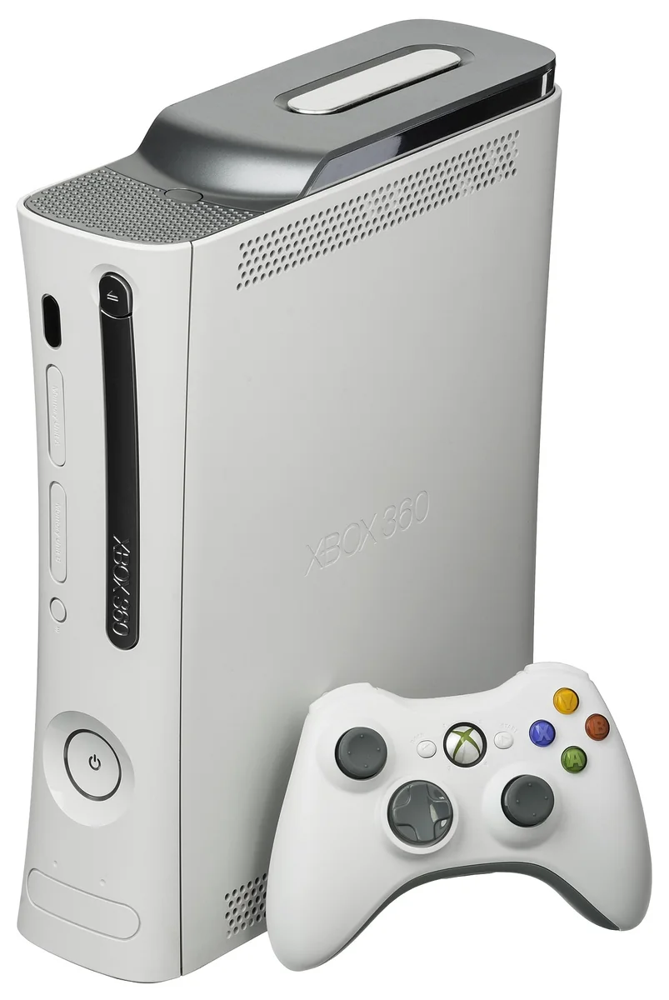
assets/img/hobbies/consoles/xbox-360.webp803×1200 · 46 KBUse: Hobbies: console cabinet (xbox-360)From: commons.wikimedia.org/wiki/File:Xbox-360-Pro-wCoPublic domain. Photo: Evan Amos, Wikimedia Commonsassets/img/hobbies/consoles/wii.webp1200×1200 · 61 KBUse: Hobbies: console cabinet (wii)From: commons.wikimedia.org/wiki/File:Wii-Console.pngPublic domain. Photo: Evan Amos, Wikimedia Commons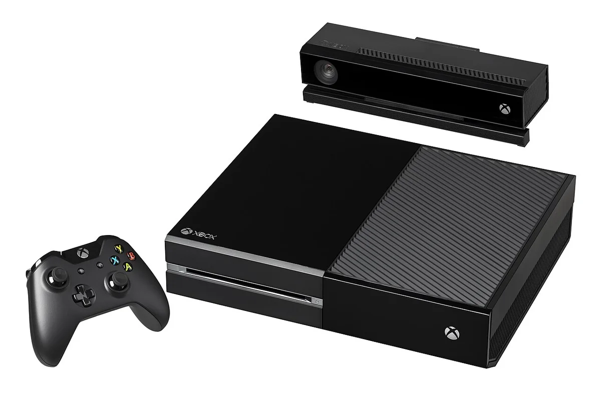
assets/img/hobbies/consoles/xbox-one.webp1200×788 · 49 KBUse: Hobbies: console cabinet (xbox-one)From: commons.wikimedia.org/wiki/File:Microsoft-Xbox-OPublic domain. Photo: Evan Amos, Wikimedia Commonsassets/img/hobbies/consoles/logos/playstation.svgSVG · 4 KBUse: Hobbies: console cabinet (playstation)From: commons.wikimedia.org/wiki/File:Playstation_logoPublic domain as a simple text logo (PD-textlogo); still a trademark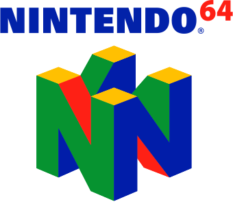
assets/img/hobbies/consoles/logos/nintendo-64.svgSVG · 9 KBUse: Hobbies: console cabinet (nintendo-64)From: en.wikipedia.org/wiki/File:Nintendo_64_(logo).svTrademark of its owner; used to show the affiliation (Wikipedia non-free file)assets/img/hobbies/consoles/logos/playstation-2.svgSVG · 6 KBUse: Hobbies: console cabinet (playstation-2)From: commons.wikimedia.org/wiki/File:PlayStation_2_loPublic domain as a simple text logo (PD-textlogo); still a trademarkassets/img/hobbies/consoles/logos/xbox.png361×94 · 39 KBUse: Hobbies: console cabinet (xbox)From: en.wikipedia.org/wiki/File:Xbox_original_logo_blTrademark of its owner; used to show the affiliation (Wikipedia non-free file)assets/img/hobbies/consoles/logos/gamecube.svgSVG · 7 KBUse: Hobbies: console cabinet (gamecube)From: en.wikipedia.org/wiki/File:Nintendo_Gamecube_LogTrademark of its owner; used to show the affiliation (Wikipedia non-free file)assets/img/hobbies/consoles/logos/xbox-360.svgSVG · 14 KBUse: Hobbies: console cabinet (xbox-360)From: en.wikipedia.org/wiki/File:Xbox_360_full_logo.svTrademark of its owner; used to show the affiliation (Wikipedia non-free file)assets/img/hobbies/consoles/logos/xbox-one.svgSVG · 6 KBUse: Hobbies: console cabinet (xbox-one)From: commons.wikimedia.org/wiki/File:X_Box_One_logo.sPublic domain as a simple text logo (PD-textlogo); still a trademarkassets/img/hobbies/consoles/logos/windows-xp.svgSVG · 27 KBUse: Hobbies: console cabinet (windows-xp)From: en.wikipedia.org/wiki/File:Windows_XP_logo_and_wTrademark of its owner; used to show the affiliation (Wikipedia non-free file)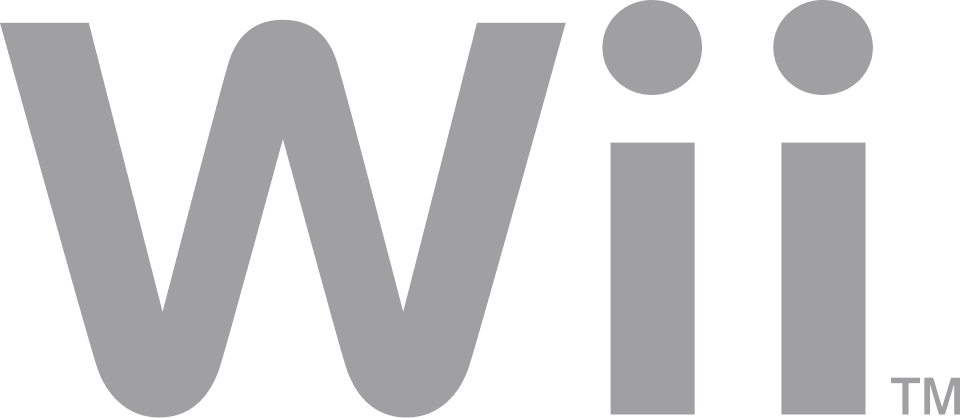
assets/img/hobbies/consoles/logos/wii.png960×418 · 9 KBUse: Hobbies: console cabinet (wii)From: commons.wikimedia.org/wiki/File:Wii.svgPublic domain as a trademark-only design (PD-Trademarked); still a trademarkSchools 18
The five logos already on the Education page, plus Harvard Extension School, Shanghai Jiao Tong University, CLEP and more.
assets/img/schools/harvard-extension-seal.svgSVG · 176 KBUse: Education page, Harvard entryFrom: extension.harvard.edu/Trademark of its owner; used to show the affiliationassets/img/schools/harvard-extension-wordmark.svgSVG · 14 KBUse: Education page, Harvard entryFrom: extension.harvard.edu/Trademark of its owner; used to show the affiliationassets/img/schools/sjtu-white.png1017×166 · 45 KBUse: Education status card ("learning Mandarin at SJTU")From: en.sjtu.edu.cn/Trademark of its owner; used to show the affiliationassets/img/schools/harvard.svgSVG · 246 KBUse: Education page (already live, PR #4)From: commons.wikimedia.org/wiki/File:Harvard_UniversiTrademark of its owner; used to show the affiliationassets/img/schools/hbs.svgSVG · 217 KBUse: Education page (already live, PR #4)From: commons.wikimedia.org/wiki/File:Harvard_BusinessTrademark of its owner; used to show the affiliationassets/img/schools/haas.svgSVG · 14 KBUse: Education page (already live, PR #4)From: commons.wikimedia.org/wiki/File:Berkeley_Haas_woTrademark of its owner; used to show the affiliation
assets/img/schools/mit.svgSVG · 0 KBUse: Education page (already live, PR #4)From: commons.wikimedia.org/wiki/File:MIT_logo_2003-20Trademark of its owner; used to show the affiliationassets/img/schools/laurier.png250×250 · 45 KBUse: Education page (already live, PR #4)From: en.wikipedia.org/wiki/File:Laurier_univ_ca_seal.Trademark of its owner; used to show the affiliationassets/img/schools/laurier-golden-hawks.png399×39 · 7 KBUse: Education page, Laurier entryFrom: commons.wikimedia.org/wiki/File:Laurier_goldenhaPublic domain as a simple text logo (PD-textlogo); still a trademarkassets/img/schools/harvard-wordmark.svgSVG · 41 KBUse: Education page, Harvard entryFrom: commons.wikimedia.org/wiki/File:Harvard_UniversiPublic domain (old design); still a trademarkassets/img/schools/harvard-extension-shield.png292×342 · 20 KBUse: Education page, Harvard entryFrom: en.wikipedia.org/wiki/File:ExtensionFlag.pngTrademark of its owner; used to show the affiliationassets/img/schools/sjtu.png316×316 · 18 KBUse: Education status card ("learning Mandarin at SJTU")From: en.wikipedia.org/wiki/File:Sjtu-logo-standard-reNon-free school logo|image has rationale=yes|Logos of universities and colleges in China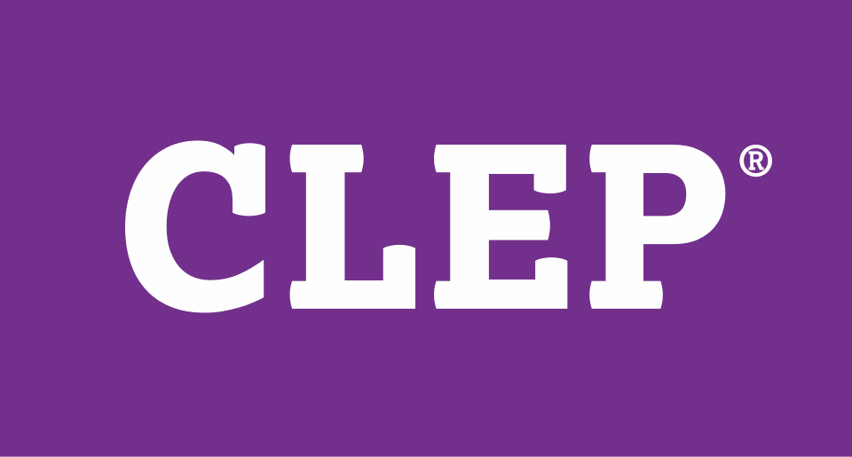
assets/img/schools/clep.png960×515 · 5 KBUse: Education page, the CLEP entry (now a green > CLEP prompt)From: commons.wikimedia.org/wiki/File:CLEP_logo_(2017)Public domain as a simple text logo (PD-textlogo); still a trademarkassets/img/schools/college-board.png960×169 · 6 KBUse: Education page, the CLEP entryFrom: en.wikipedia.org/wiki/File:College_Board_logo.svTrademark of its owner; used to show the affiliation (Wikipedia non-free file)assets/img/schools/berkeley-haas-logo.png960×333 · 17 KBUse: Education page, Berkeley Haas entryFrom: commons.wikimedia.org/wiki/File:Berkeley-Haas_ScCC BY-SA 4.0 file of a trademark: credit "Wikimedia Commons" if usedassets/img/schools/uc-berkeley-seal.png960×960 · 60 KBUse: Education page, Berkeley Haas entryFrom: commons.wikimedia.org/wiki/File:Seal_of_UniversiPublic domain; still a trademarkassets/img/schools/mit-seal.png960×957 · 93 KBUse: Education page, MIT entryFrom: en.wikipedia.org/wiki/File:MIT_Seal.svgNon-free school logo|image has rationale=yes|SVG logos of universities and collegesassets/img/schools/laurier-primary.png576×173 · 12 KBUse: Education page, Laurier entryFrom: en.wikipedia.org/wiki/File:WLU_Primary_Logo.pngNon-free school logo|image has rationale=yes|University and college logosClubs 8
The clubs on the Education page: Harvard Computer Society, Harvard Outing Club, and the Harvard Clubs of Boston and New York.
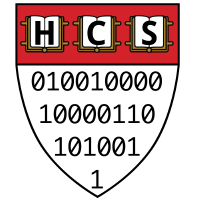
assets/img/schools/clubs/harvard-computer-society.png200×200 · 16 KBUse: Education page, clubsFrom: hcs.harvard.edu/Trademark of its owner; used to show the affiliationassets/img/schools/clubs/harvard-computer-society-banner.jpg1200×630 · 87 KBUse: Education page, clubsFrom: hcs.harvard.edu/Trademark of its owner; used to show the affiliation
assets/img/schools/clubs/harvard-outing-club.png300×300 · 32 KBUse: Education page, clubsFrom: harvardoutingclub.org/Trademark of its owner; used to show the affiliationassets/img/schools/clubs/harvard-club-boston.png297×100 · 6 KBUse: Education page, clubsFrom: harvardclub.com/Trademark of its owner; used to show the affiliationassets/img/schools/clubs/harvard-club-nyc-seal.png100×100 · 13 KBUse: Education page, clubsFrom: hcny.com/Trademark of its owner; used to show the affiliationassets/img/schools/clubs/harvard-club-nyc-wordmark.png140×36 · 2 KBUse: Education page, clubsFrom: hcny.com/Trademark of its owner; used to show the affiliationassets/img/schools/clubs/harvard-club-boston-clubhouse.jpg1280×1280 · 514 KBUse: Education page: "coffee at the club"From: commons.wikimedia.org/wiki/File:Harvard_Club_of_CC BY 4.0. Credit: "Photo: ajay_suresh, CC BY 4.0, via Wikimedia Commons"assets/img/schools/clubs/harvard-club-nyc-clubhouse.jpg960×1280 · 350 KBUse: Education page: "coffee at the club"From: commons.wikimedia.org/wiki/File:Harvard_Club_of_CC BY 4.0. Credit: "Photo: see the source page, CC BY 4.0, via Wikimedia Commons"Travel: the thirteen homes 13
One photo per home for the postcards, plus Harvard Yard. Free licences: each needs the credit shown when it is used.
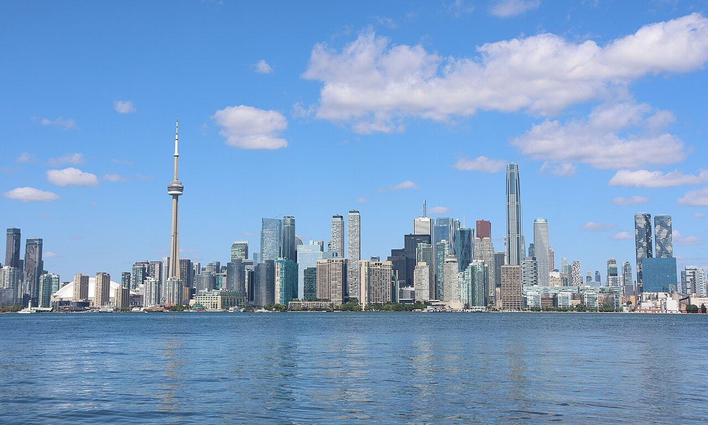
assets/img/travel/cities/toronto.jpg1280×768 · 169 KBUse: Travel: postcard for home 01/13From: commons.wikimedia.org/wiki/File:Toronto_Skyline_CC BY-SA 4.0. Credit: "Photo: Dillan Payne, CC BY-SA 4.0, via Wikimedia Commons"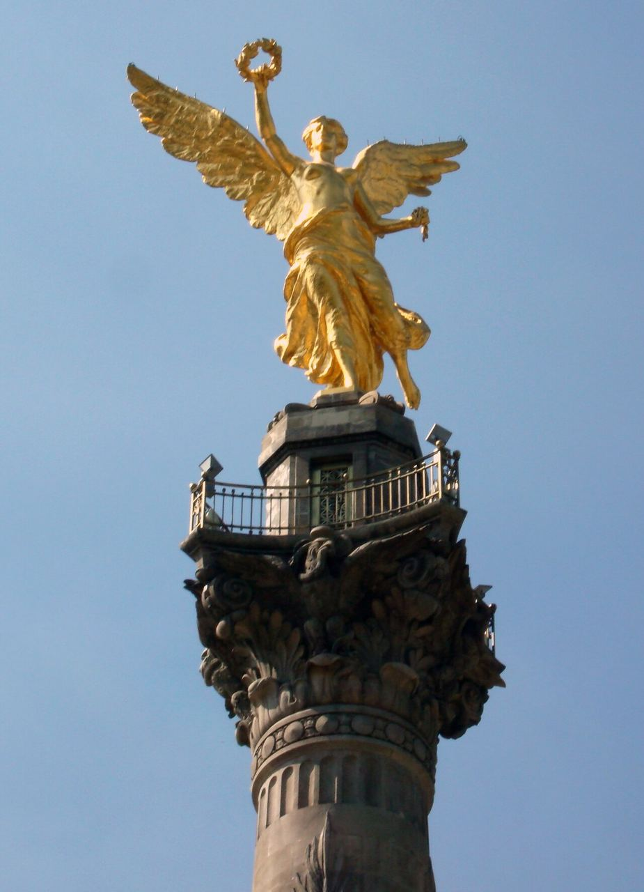
assets/img/travel/cities/mexico-city.jpg925×1280 · 84 KBUse: Travel: postcard for home 02/13From: commons.wikimedia.org/wiki/File:Angel-de-la-IndePublic domain. Photo: Intersofia, Wikimedia Commons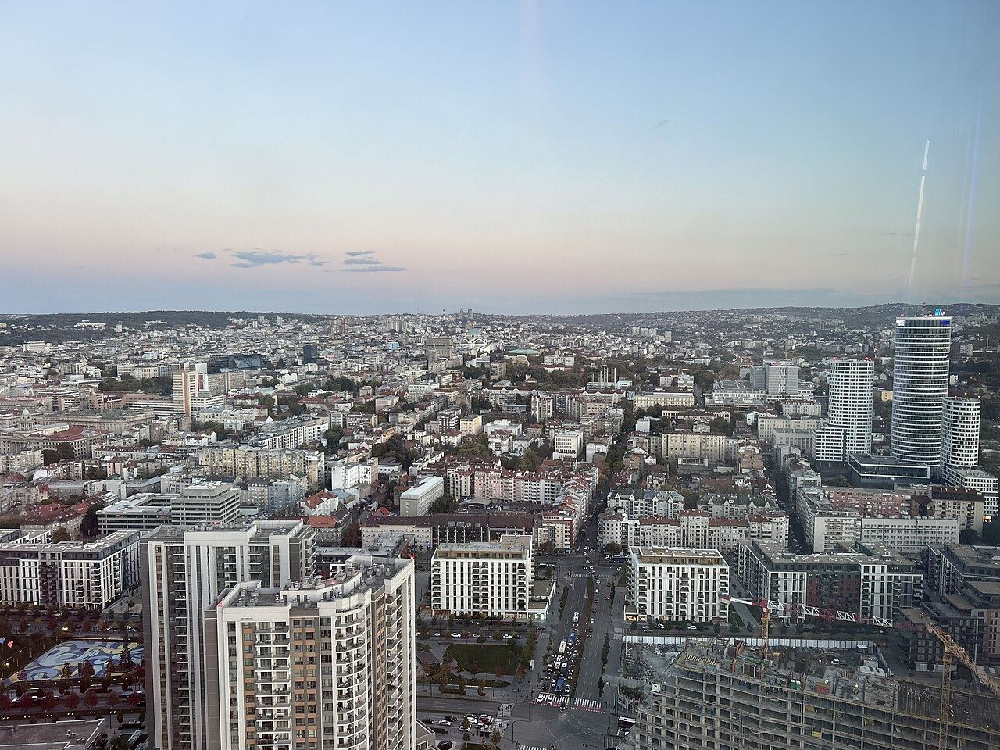
assets/img/travel/cities/belgrade.jpg1280×960 · 300 KBUse: Travel: postcard for home 03/13From: commons.wikimedia.org/wiki/File:Belgrade_from_thPublic domain. Photo: DKjellby, Wikimedia Commons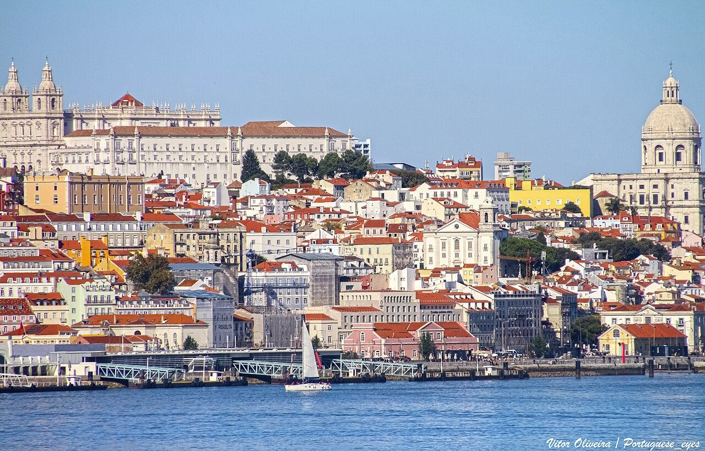
assets/img/travel/cities/lisbon.jpg1280×821 · 278 KBUse: Travel: postcard for home 04/13 (and the About slides for Cambridge and Lisbon)From: commons.wikimedia.org/wiki/File:Lisboa_-_PortugaCC BY-SA 2.0. Credit: "Photo: Vitor Oliveira, CC BY-SA 2.0, via Wikimedia Commons"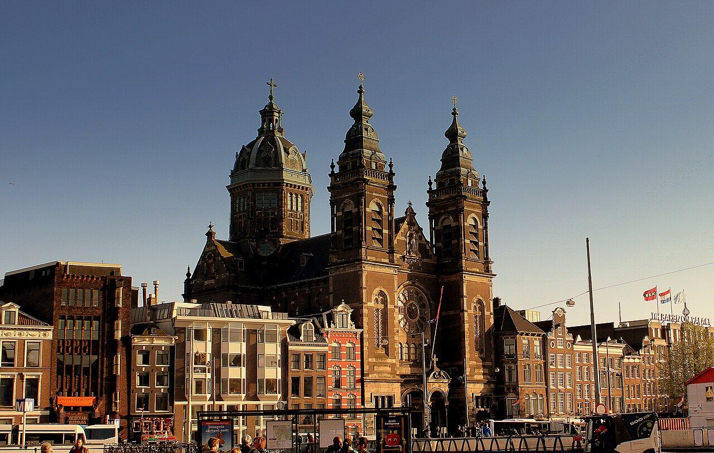
assets/img/travel/cities/amsterdam.jpg1280×814 · 221 KBUse: Travel: postcard for home 05/13From: commons.wikimedia.org/wiki/File:AMSTERDAM_HOLLANCC BY-SA 2.0. Credit: "Photo: calflier001, CC BY-SA 2.0, via Wikimedia Commons"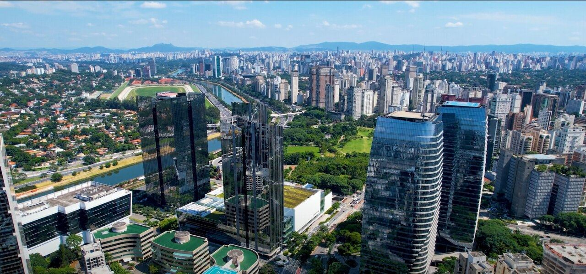
assets/img/travel/cities/sao-paulo.jpg1280×601 · 201 KBUse: Travel: postcard for home 06/13From: commons.wikimedia.org/wiki/File:Marginal_PinheirCC BY-SA 4.0. Credit: "Photo: Agent010, CC BY-SA 4.0, via Wikimedia Commons"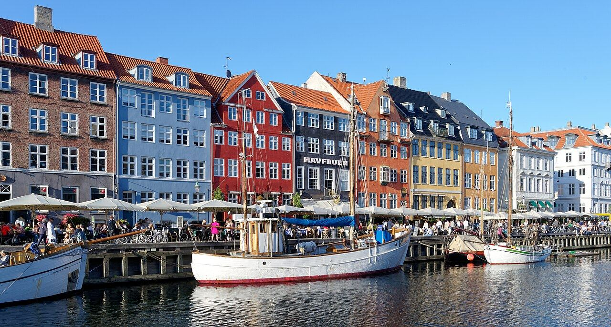
assets/img/travel/cities/copenhagen.jpg1280×686 · 260 KBUse: Travel: postcard for home 07/13From: commons.wikimedia.org/wiki/File:Nyhavn,_CopenhagCC BY-SA 4.0. Credit: "Photo: Jakub Hałun, CC BY-SA 4.0, via Wikimedia Commons"assets/img/travel/cities/cambridge.jpg1280×853 · 442 KBUse: Travel: postcard for home 08/13 (and the About slides for Cambridge and Lisbon)From: commons.wikimedia.org/wiki/File:Harvard_Yard_in_CC BY 2.0. Credit: "Photo: Nina R, CC BY 2.0, via Wikimedia Commons"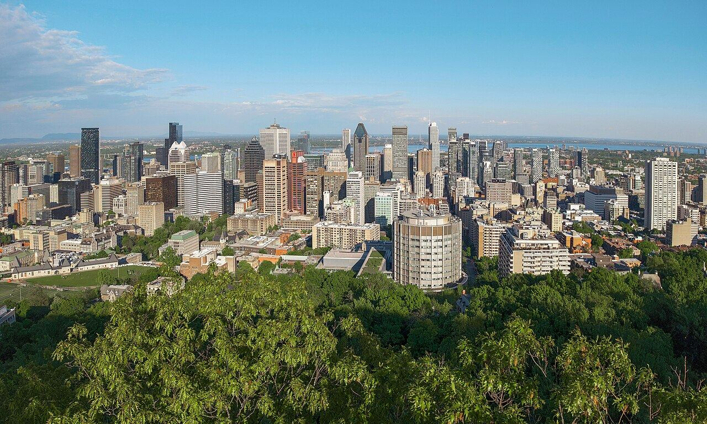
assets/img/travel/cities/montreal.jpg1280×768 · 298 KBUse: Travel: postcard for home 09/13From: commons.wikimedia.org/wiki/File:Montreal,_QuebecCC BY 4.0. Credit: "Photo: Quintin Soloviev, CC BY 4.0, via Wikimedia Commons"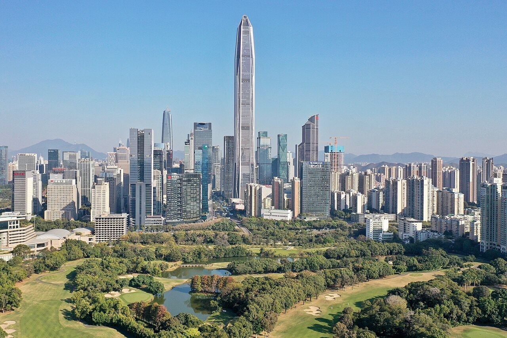
assets/img/travel/cities/shenzhen.jpg1280×853 · 270 KBUse: Travel: postcard for home 10/13From: commons.wikimedia.org/wiki/File:Commercial_area_CC BY-SA 4.0. Credit: "Photo: Charlie fong, CC BY-SA 4.0, via Wikimedia Commons"assets/img/travel/cities/valencia.jpg1280×582 · 108 KBUse: Travel: postcard for home 11/13From: commons.wikimedia.org/wiki/File:Ciutat_de_les_ArCC BY 2.0. Credit: "Photo: William Warby, CC BY 2.0, via Wikimedia Commons"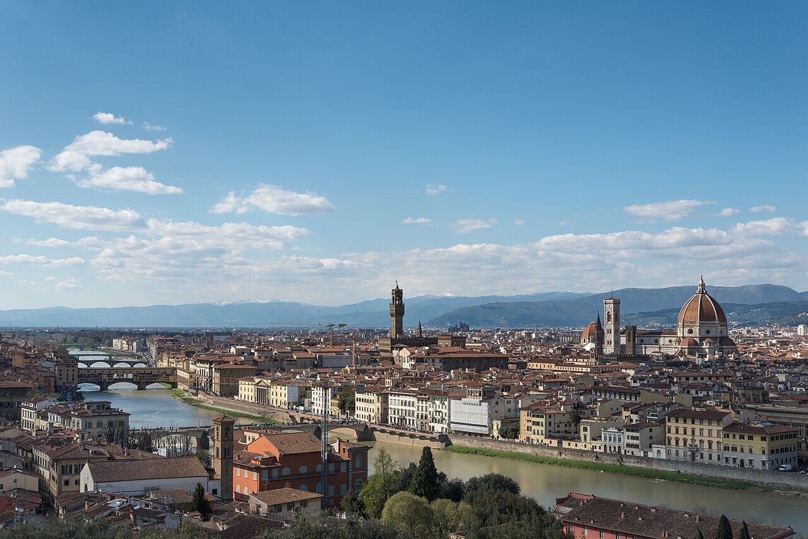
assets/img/travel/cities/florence.jpg1280×854 · 199 KBUse: Travel: postcard for home 12/13From: commons.wikimedia.org/wiki/File:Firenze_-_PiazzaCC BY 4.0. Credit: "Photo: Giorgio Galeotti, CC BY 4.0, via Wikimedia Commons"assets/img/travel/cities/shanghai.jpg1280×855 · 232 KBUse: Travel: postcard for home 13/13From: commons.wikimedia.org/wiki/File:Huangpu_Park_201CC BY 2.0. Credit: "Photo: xiquinhosilva, CC BY 2.0, via Wikimedia Commons"Flags 39
Every country on the "every place I've been" list, plus the Philippines (a dive country), as SVG. Named by ISO country code.

assets/img/flags/at.svgSVG · 0 KBUse: Travel: every place I've beenFrom: flagcdn.com/Public domain (national flags)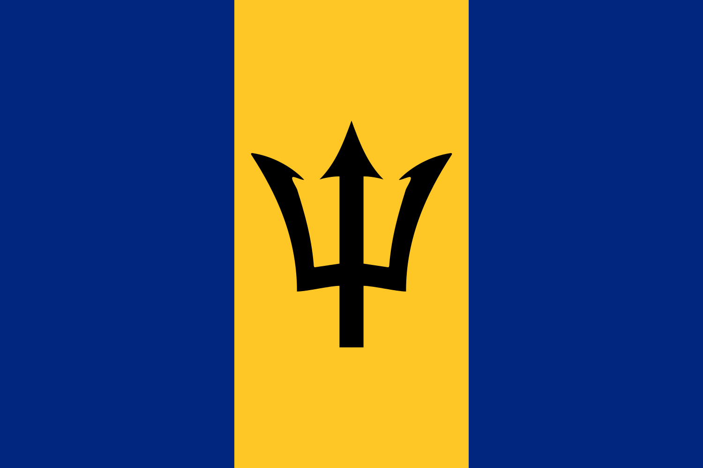
assets/img/flags/bb.svgSVG · 1 KBUse: Travel: every place I've beenFrom: flagcdn.com/Public domain (national flags)
assets/img/flags/be.svgSVG · 0 KBUse: Travel: every place I've beenFrom: flagcdn.com/Public domain (national flags)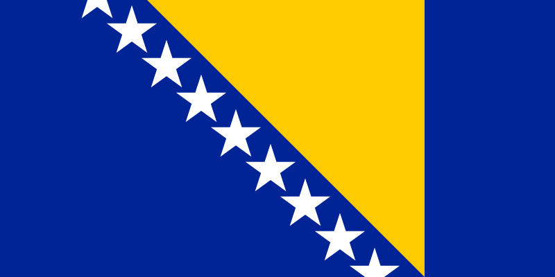
assets/img/flags/ba.svgSVG · 0 KBUse: Travel: every place I've beenFrom: flagcdn.com/Public domain (national flags)
assets/img/flags/br.svgSVG · 4 KBUse: Travel: every place I've beenFrom: flagcdn.com/Public domain (national flags)
assets/img/flags/ca.svgSVG · 1 KBUse: Travel: every place I've beenFrom: flagcdn.com/Public domain (national flags)assets/img/flags/cn.svgSVG · 1 KBUse: Travel: every place I've beenFrom: flagcdn.com/Public domain (national flags)assets/img/flags/cy.svgSVG · 22 KBUse: Travel: every place I've beenFrom: flagcdn.com/Public domain (national flags)
assets/img/flags/dk.svgSVG · 0 KBUse: Travel: every place I've beenFrom: flagcdn.com/Public domain (national flags)assets/img/flags/do.svgSVG · 145 KBUse: Travel: every place I've beenFrom: flagcdn.com/Public domain (national flags)
assets/img/flags/fr.svgSVG · 0 KBUse: Travel: every place I've beenFrom: flagcdn.com/Public domain (national flags)
assets/img/flags/de.svgSVG · 0 KBUse: Travel: every place I've beenFrom: flagcdn.com/Public domain (national flags)
assets/img/flags/hk.svgSVG · 1 KBUse: Travel: every place I've beenFrom: flagcdn.com/Public domain (national flags)
assets/img/flags/in.svgSVG · 1 KBUse: Travel: every place I've beenFrom: flagcdn.com/Public domain (national flags)assets/img/flags/id.svgSVG · 0 KBUse: Travel: every place I've beenFrom: flagcdn.com/Public domain (national flags)assets/img/flags/ie.svgSVG · 0 KBUse: Travel: every place I've beenFrom: flagcdn.com/Public domain (national flags)assets/img/flags/il.svgSVG · 0 KBUse: Travel: every place I've beenFrom: flagcdn.com/Public domain (national flags)
assets/img/flags/it.svgSVG · 0 KBUse: Travel: every place I've beenFrom: flagcdn.com/Public domain (national flags)
assets/img/flags/jp.svgSVG · 0 KBUse: Travel: every place I've beenFrom: flagcdn.com/Public domain (national flags)assets/img/flags/jo.svgSVG · 0 KBUse: Travel: every place I've beenFrom: flagcdn.com/Public domain (national flags)assets/img/flags/kw.svgSVG · 0 KBUse: Travel: every place I've beenFrom: flagcdn.com/Public domain (national flags)
assets/img/flags/mx.svgSVG · 140 KBUse: Travel: every place I've beenFrom: flagcdn.com/Public domain (national flags)assets/img/flags/me.svgSVG · 106 KBUse: Travel: every place I've beenFrom: flagcdn.com/Public domain (national flags)
assets/img/flags/ma.svgSVG · 0 KBUse: Travel: every place I've beenFrom: flagcdn.com/Public domain (national flags)assets/img/flags/nl.svgSVG · 0 KBUse: Travel: every place I've beenFrom: flagcdn.com/Public domain (national flags)assets/img/flags/mk.svgSVG · 0 KBUse: Travel: every place I've beenFrom: flagcdn.com/Public domain (national flags)assets/img/flags/pa.svgSVG · 0 KBUse: Travel: every place I've beenFrom: flagcdn.com/Public domain (national flags)assets/img/flags/ph.svgSVG · 1 KBUse: Travel: every place I've been (dive country)From: flagcdn.com/Public domain (national flags)
assets/img/flags/pt.svgSVG · 11 KBUse: Travel: every place I've beenFrom: flagcdn.com/Public domain (national flags)assets/img/flags/qa.svgSVG · 0 KBUse: Travel: every place I've beenFrom: flagcdn.com/Public domain (national flags)
assets/img/flags/sa.svgSVG · 24 KBUse: Travel: every place I've beenFrom: flagcdn.com/Public domain (national flags)assets/img/flags/rs.svgSVG · 28 KBUse: Travel: every place I've beenFrom: flagcdn.com/Public domain (national flags)
assets/img/flags/es.svgSVG · 149 KBUse: Travel: every place I've beenFrom: flagcdn.com/Public domain (national flags)
assets/img/flags/se.svgSVG · 0 KBUse: Travel: every place I've beenFrom: flagcdn.com/Public domain (national flags)
assets/img/flags/th.svgSVG · 0 KBUse: Travel: every place I've beenFrom: flagcdn.com/Public domain (national flags)assets/img/flags/tr.svgSVG · 0 KBUse: Travel: every place I've beenFrom: flagcdn.com/Public domain (national flags)
assets/img/flags/ae.svgSVG · 0 KBUse: Travel: every place I've beenFrom: flagcdn.com/Public domain (national flags)
assets/img/flags/us.svgSVG · 1 KBUse: Travel: every place I've beenFrom: flagcdn.com/Public domain (national flags)
assets/img/flags/gb.svgSVG · 1 KBUse: Travel: every place I've beenFrom: flagcdn.com/Public domain (national flags)